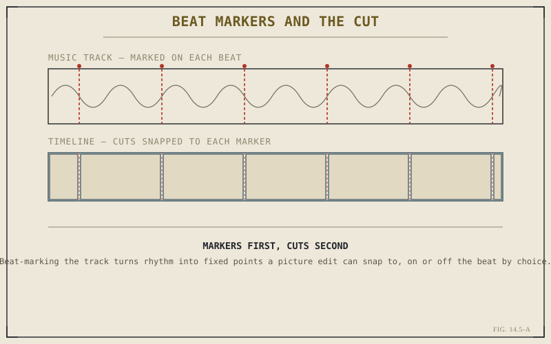

Every genre this part has covered so far is paced by something outside the frame — a script's dramatic beats, a documentary's discovered structure, a platform's attention window, a broadcast spec's running time. Music video editing is paced by something already inside the frame from the first moment: the track itself. This closing chapter of Part XIV treats a music video not as picture with music added, but as a cut whose actual backbone is audio, with picture built to sit on top of it.
Cutting to a Track, Not a Script
The single biggest structural difference between a music video and everything else in this part is sequencing: the audio arrives finished, in full, before a single picture cut is made. There's no script to interpret and no discovered structure to search for — the track's own structure, verse, chorus, bridge, drop, already dictates the shape of the edit. The editorial work is choosing what picture serves each section of a structure that was decided somewhere else, weeks before the footage was even shot.
Beat-Marking: Turning Rhythm Into Fixed Points
Chapter 4.5 introduced markers as a general navigation tool. Music video work is where markers become a rhythmic instrument in their own right: playing the track and dropping a marker on every beat, or on the beats that matter for a given section, converts something you can only feel while listening into fixed, visible points a picture edit can actually snap to. Once a track is beat-marked this way, placing a cut exactly on a marker, or deliberately just off it, becomes a precise decision rather than a guess made by ear in the moment.

Beat markers turn a felt rhythm into fixed points the picture edit can cut against directly.
Speed Ramps and Zoom as Rhythmic Emphasis
Keyframing from Chapter 7.5 does double duty here beyond simple position animation: a keyframed speed ramp landing its transition from slow to full speed exactly on a beat marker, or a rapid keyframed zoom punching in on a drop, both use the same interpolation logic that chapter introduced, just aimed at emphasizing a musical moment rather than sliding a title across the frame. The ease curves that chapter recommended for natural-looking motion are worth deliberately breaking here — a hard, unnatural snap on the beat is frequently the entire point.
A music video's structure isn't discovered during the edit, the way a documentary's often is. It arrives finished, in the track, before the first cut is made — the editorial work is finding the picture that earns its place inside a rhythm that was already decided.
Multicam for the Live Performance Shoot
Performance-heavy music videos are frequently shot the same way documentary interviews are — several cameras running simultaneously on one continuous, unrepeatable performance. That's genuine multicam footage under Chapter 6.1's definition, and the live, real-time angle-switching workflow from Chapter 6.3 is particularly well suited here specifically because the switching decision and the beat-marked rhythm can be made together, in the same real-time pass, rather than as two separate stages.
Knowing When Not to Cut on the Beat
It's worth closing Part XIV on a note of restraint that applies as much here as it did to Chapter 14.1's case for the hard cut: cutting on literally every beat, for an entire track, reads as frantic rather than rhythmic. The strongest music video edits use beat markers as a menu of options rather than an obligation, holding a shot across several beats when the footage or the moment calls for stillness, and reserving the hard, on-the-beat cut for where it actually earns the emphasis.
That closes Part XIV. Between narrative's disciplined coverage, documentary's scale and discovery, social media's compressed format, broadcast's technical rigor, and this chapter's rhythm-driven structure, the same toolkit built across this entire book has now been applied to five genuinely different kinds of projects. Part XV turns from applying that toolkit correctly to what happens when something in it stops working — starting with Chapter 15.1's diagnostic method, a systematic way of approaching a problem before reaching for a fix.
Key Concepts to Remember
- A music video's structure arrives already decided, inside the finished track, rather than being discovered or written during the edit.
- Beat-marking a track with Chapter 4.5's markers converts felt rhythm into fixed points the picture edit can snap cuts to.
- Keyframed speed ramps and zooms from Chapter 7.5 land rhythmic emphasis on the beat, and deliberately abrupt interpolation is often the goal.
- Beat markers are a menu, not an obligation — cutting on every single beat reads as frantic rather than genuinely rhythmic.
Cross-References Forward
| → Ch. 15.1 | The Diagnostic Method for Editing Software — opens Part XV with a systematic approach to problems, not just genre application. |
| → Ch. 4.5 | Revisit markers and timeline navigation, the tool this chapter turns into a rhythmic beat-marking instrument. |
| → Ch. 6.3 | Revisit cutting a multicam timeline live, well suited to performance shoots cut against a beat-marked track. |